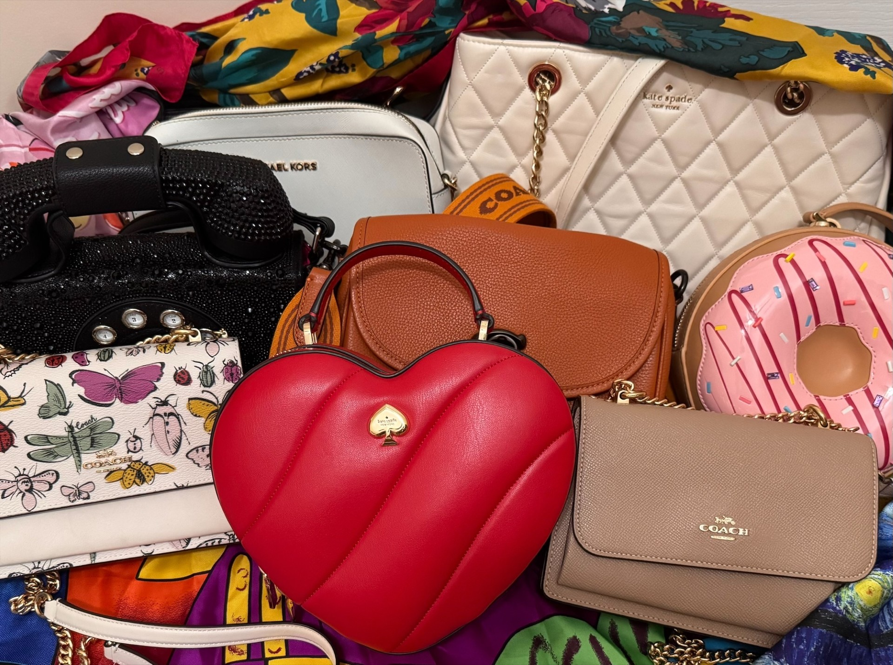
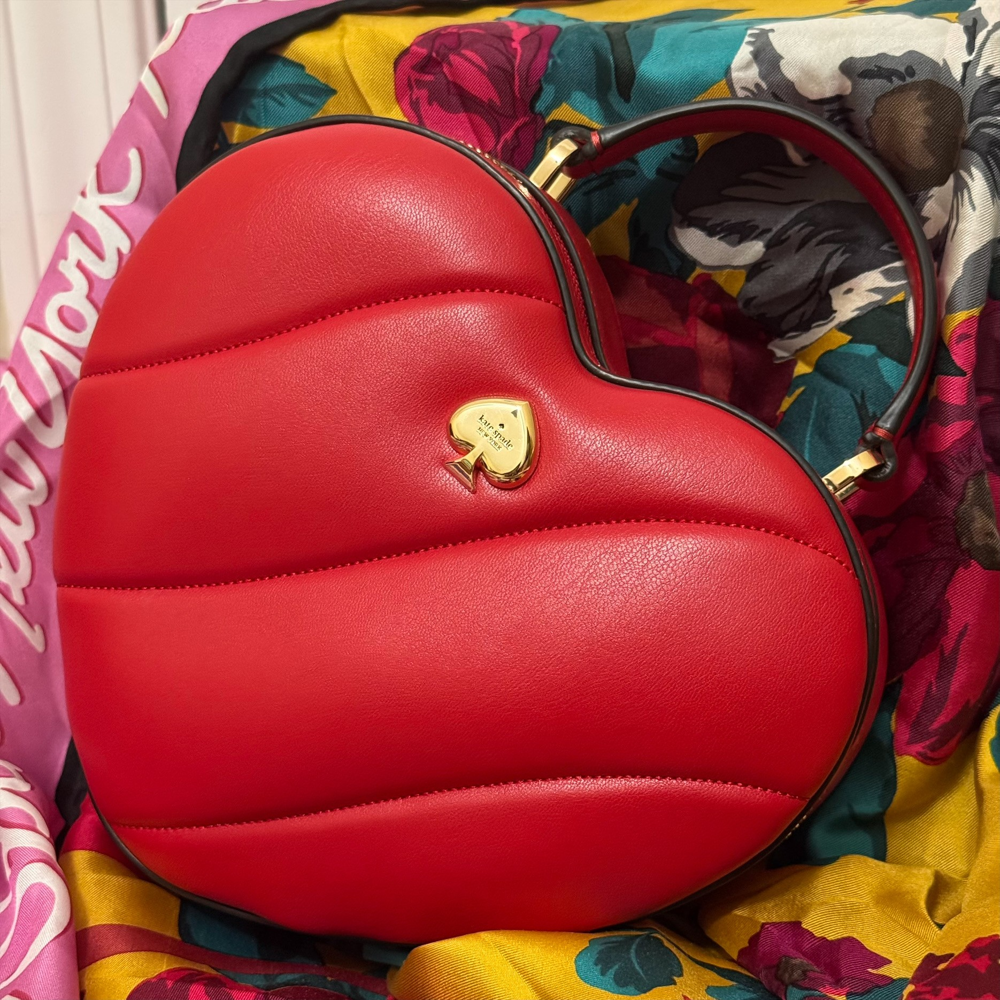
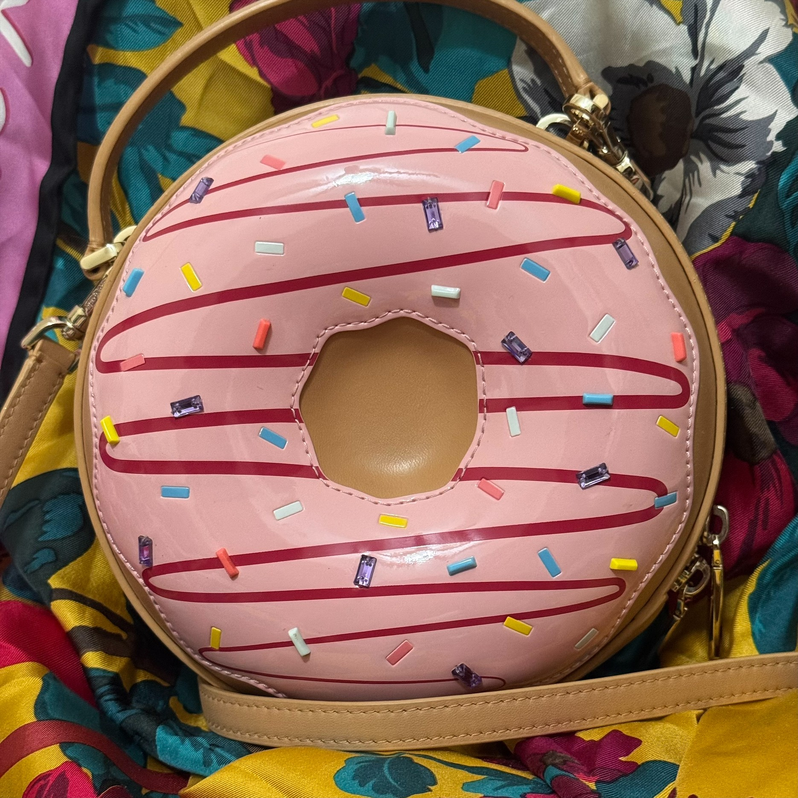
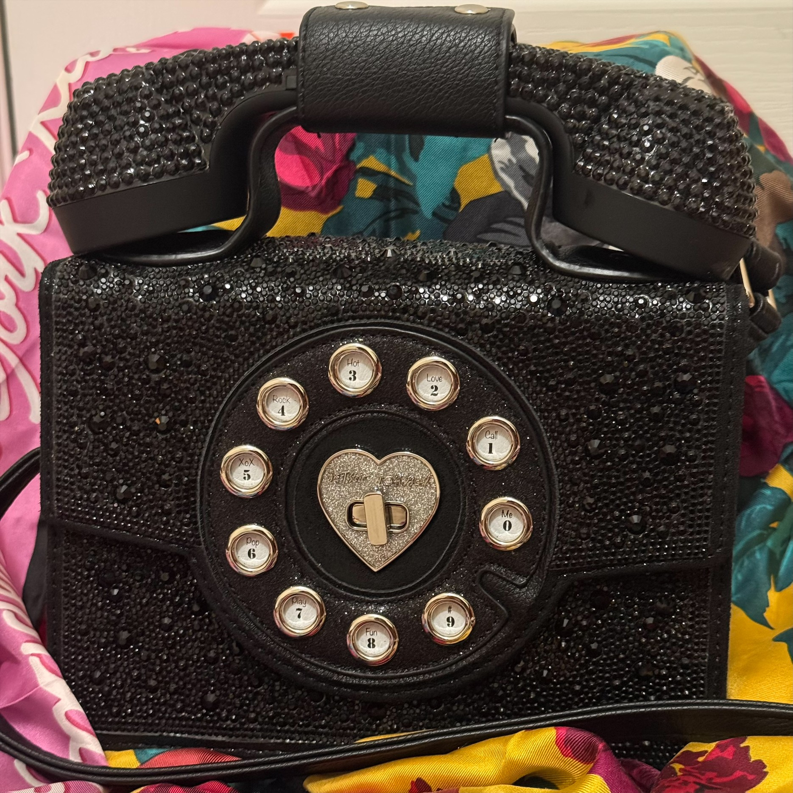
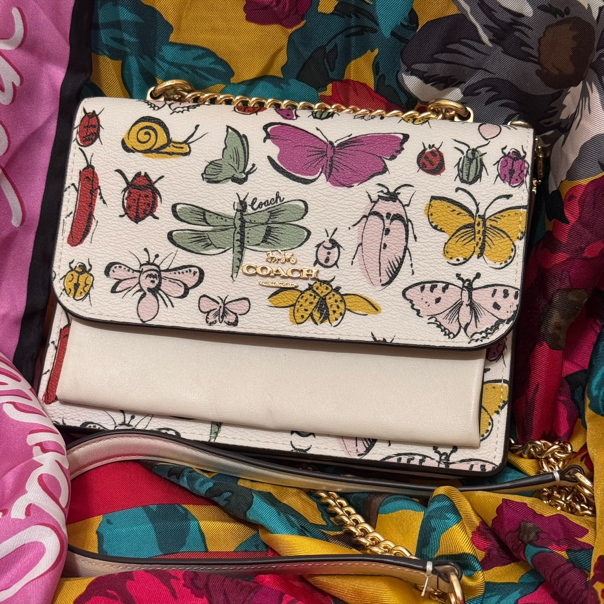
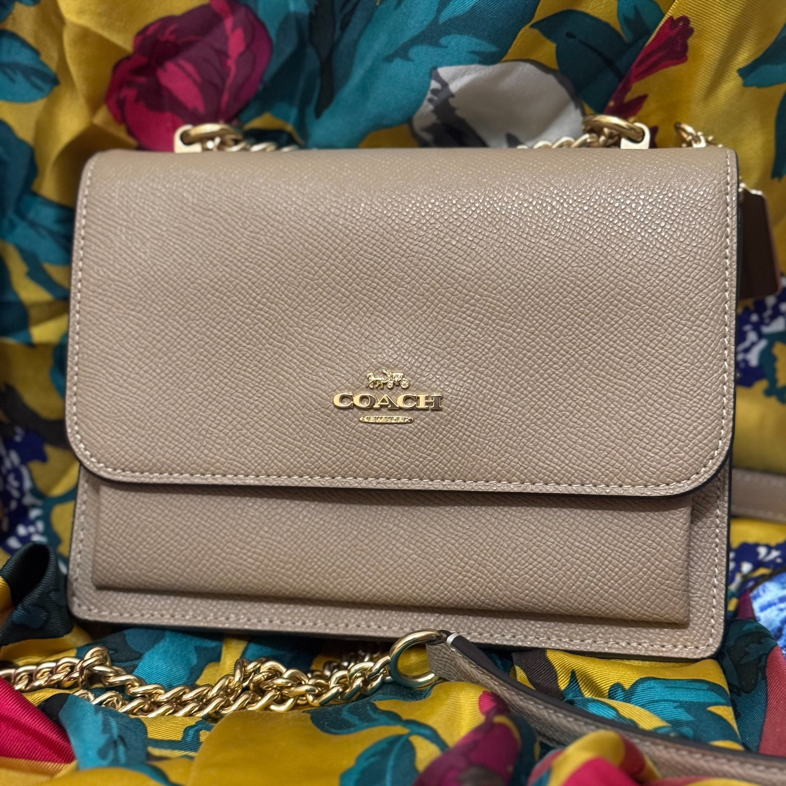
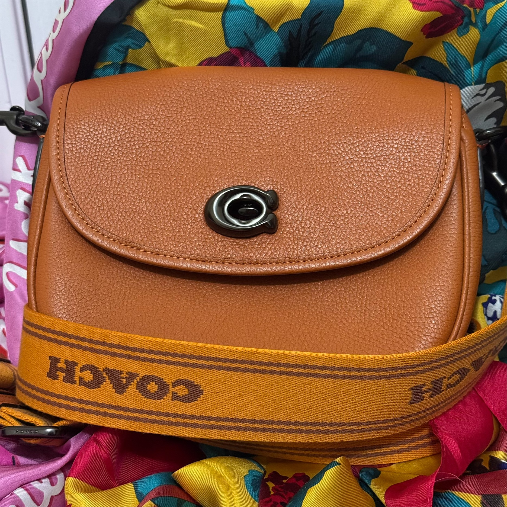
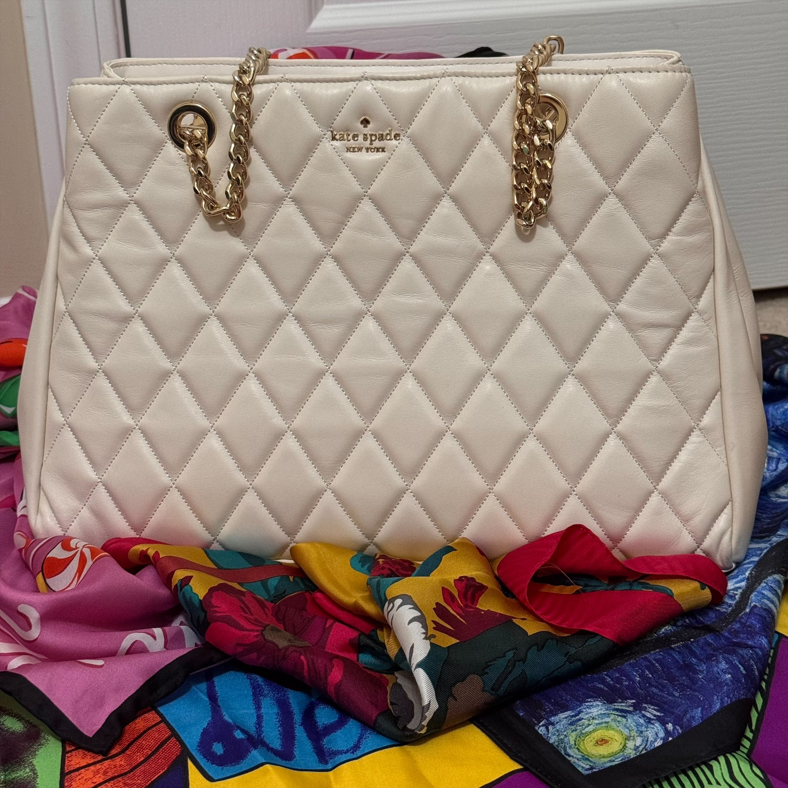
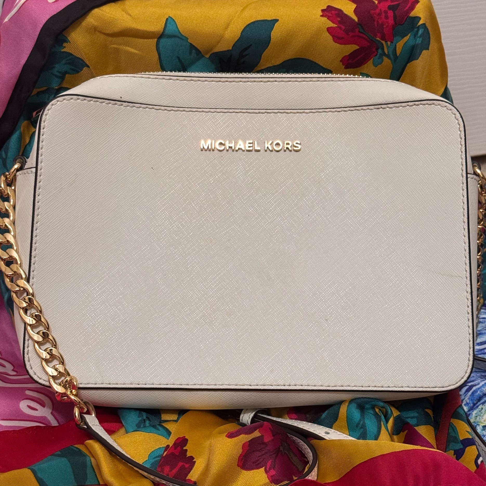

What happened?
Hey guys, in a cruel twist of fate I am $761 short of my summer tuition and my scholarship ran out. Tragically, I am forced to part with my collection of bags so I can raise money to graduate.
I really love eccentric, wonky, and kitchy bags and was slowly building up my collection. Some of the really fun ones are the phone bag, the pink donut, and the red heart. For those that prefer a more traditional bag in a conservative color, I have some of those too. I have something for everybody!
I got most of these bags throughout the years from designers like Kate Spade, Betsey Johnson, Michael Kors, and Coach. I'm particularly heartbroken about my Betsey Johnson bag, since she is my favorite designer. However, I am hopeful she will go to a good home.
All bags are blemish free and without any damage. They are stored in a cool, dry place away from pets and in a smoke-free home. Prices are non-negotiable.
Please peruse the listings at your leisure and message me on Instagram if you're interested in contributing to my college fund!
Listings

This beautiful red heart crossbody bag also has a small handle for when you just want to hold your bag in your hand. Originally this bag sold for $399. Free of blemishes or damage. The zipper can be tough with the heart shape but it is still functional.

You won't find a bag like this anywhere (except eBay for much more than I'm asking). This novelty collector's-edition bag will turn heads everywhere you go!

Not only is this retro phone bag extremely cute, but the phone is actually functional as well! Just connect it via Bluetooth and you can take your calls the old-fashioned way!

Small enough to not be bulky but large enough to fit the essentials, and who doesn't love bugs?

Okay, so maybe you don't like bugs. Well, here's the same bag but in a neutral color! Perfect as an everyday bag in summer or winter!

This one is another excellent everyday bag. The leather is so soft and the color goes with just about everything.

Near brand new, perfect tote bag for warm summer nights. If you need a larger bag that doesn't feel bulky, this is for you!

This plain, white crossbody makes for a fantastic everyday bag.